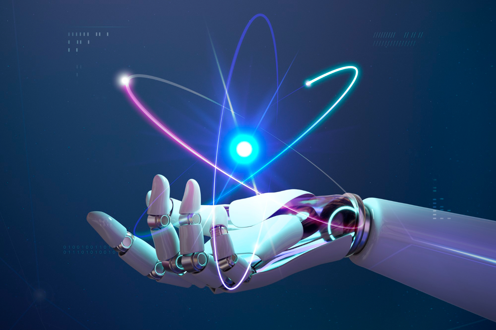

Artificial Intelligence : The Future

Artificial Intelligence
Artificial intelligence is a science that has defined its goal as making machines do things that would require intelligence if done by humans. The desire for intelligent machines was just an elusive dream until the first computer was developed. The early computers could manipulate large data bases effectively by following prescribed algorithms, but could not reason about the information provided. This gave rise to the question of whether computers could ever think. Alan Turing defined the intelligent behaviour of a computer as the ability to achieve human-level performance in a cognitive task. The Turing test provided a basis for the verification and validation of knowledge-based systems.
1. Why it is important?

AI is changing the world around us as never before.
Artificial intelligence is the one of the branch of computer science, which helps us to make automated electromic devices.It is a truly a revolutionary feat of computer science,set tobecome a core component of all modern softwares over the coming years and the decades.
AI in CyberSecurity
In storing BigData
Efficiently Working
making things Easy
Implimentation of policies
2.how it is bringing the change

" Man has long feared the rise of the machine-his own creation becoming smarter and more intelligent than he."
New Jobs
Bridging Language Divides
Transforming Government
Delivering Health Care
Delivering Health Care
According To Me — Everytime change is necessary.As it push our ability to do a certain task
Conclusion
Robots are not going to replace humans, they are going to make their jobs much more humane. Difficult, demeaning, demanding, dangerous, dull – these are the jobs robots will be taking..